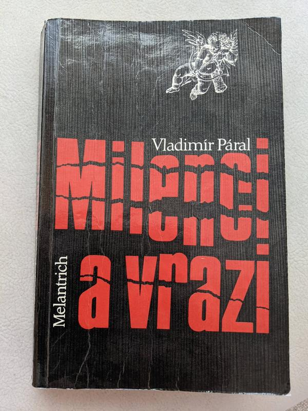
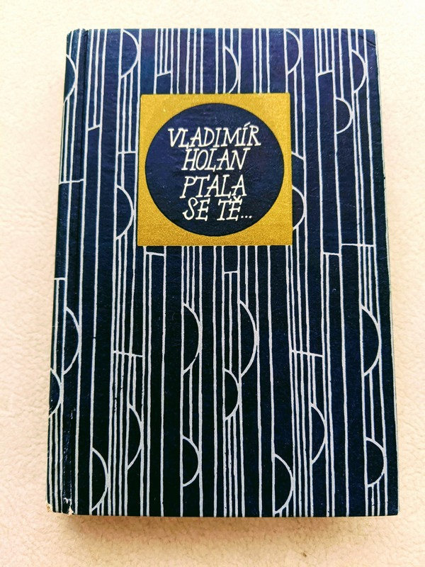

Přiznám se, že v uplynulých dnech a týdnech mě úplně opustila chuť psát a cokoliv tvořit. S událostmi, které začaly plnit média a zpravodajské pořady, mi najednou cokoliv, do čeho jsem se chtěla pustit, přišlo tak nedůležité a banální… Prvotní šok ale samozřejmě postupně vystřídalo přijmutí té situace a myšlenka, že přesně tyhle “banality” jsou tím, co nás v životě nakonec drží nad vodou, ať se děje co se děje. A literatura a knihy jsou pro mě jednou takovou neotřesitelnou jistotou. Přeju nám všem, ať takových jistot, kterými se můžeme v těžkých časech obklopovat, je co nejvíc…
Vladimír Páral - Milenci a vrazi
K románu Milenci a vrazi mám takový rozporuplný vztah. Na jednu stranu je to určitě jedno z kultovních děl české literární tvorby 60. let, na stranu druhou to není kniha, při jejímž čtení byste si libovali, naopak je to sousto dost těžké a vlastně se vám docela uleví, když dospějete na poslední stránku… Tak či tak si ke mně našla cestu už podruhé. Poprvé jsem ji četla někdy krátce po maturitě a vlastně bylo docela zábavné pozorovat, jak některé pasáže, které mi tehdy přišly zásadní, už se mnou dnes vůbec nerezonují a naopak. To je něco, co mě na knihách opravdu baví - aniž by se na jejich textu změnila jediná řádka, ukazují nám s odstupem, jak se měníme my sami.
…a možná je to takový zvláštní zákon skutečné silné lásky, že ti dva chtějí spolu prožít všecko, dobré i zlé, takový zvláštní zákon, který ty dva ukáže jednoho druhému v nejprudším světle, protože milovat se je poznat se a být spolu absolutně ve všem…
Milenci a vrazi mají tolik dějových linií, že obsáhnout je všechny by dalece přesahovalo mou stručnou recenzi, každopádně hlavním motiv knihy vidím v satirickém ztvárnění společnosti, která vlastně není nijak definována dobou, v níž byl román napsán. Naopak se čtenář může přesvědčit, že řada stereotypů zůstává i po letech obecně platná a neměnná.

Vladimír Holan - Ptala se tě…
Po neuvěřitelně dlouhé době jsem zase sáhla po nějaké poezii, a sice po tomto výboru z veršů Vladimíra Holana, v němž hraje prim především lyrická milostná tvorba.

A to je všechno. Víc jsem toho bohužel během zimy přečíst nestihla. Do budoucna mě tu čeká hned několik “odborných titulů”, které mi přinesl Ježíšek, a tak se snad zase máte na co těšit. Na viděnou v lepších časech!